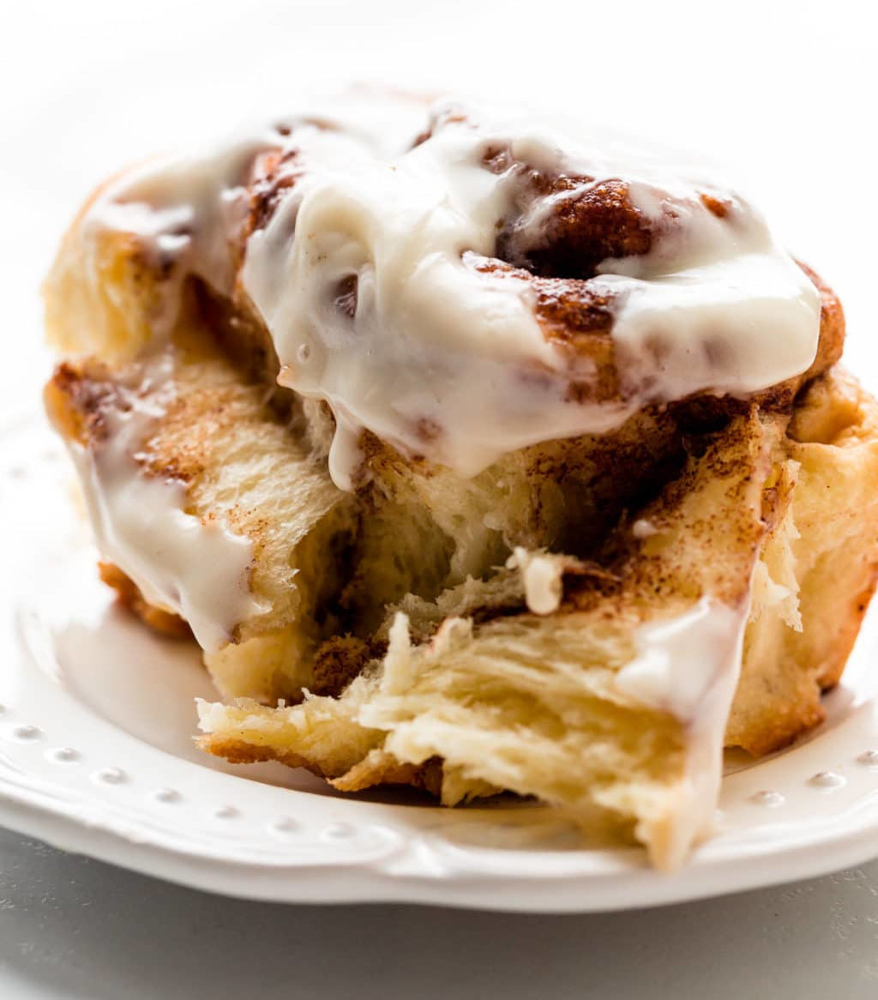

EASY CINNAMON ROLLS!
Homepage

Description
A recipe to make 6 soft cinnamon rolls topped with a sweet cream cheese frosting.
These should take around 3 hours to make from start to finish
Ingredients
Cinnamon rolls
- 60ml warm water
- 3g yeast
- 60ml whole milk
- 30g room temp unsalted butter
- 35g caster or granulated sugar
- 1/4 teaspoon salt
- 1 lrage egg
- 245g plain flour plus extra for dusting
Cinnamon sugar filling
- 30g softened butter
- 45g brown sugar
- 1 and 1/2 teaspoons cinnamon
Cream cheese frosting
- 15g softened butter
- 150g full fat cream cheese, room temp
- 60g icing sugar
- 1/2 teaspoon vanilla extract
Instructions
- Add warm water to a bowl and add yeast and let it bloom